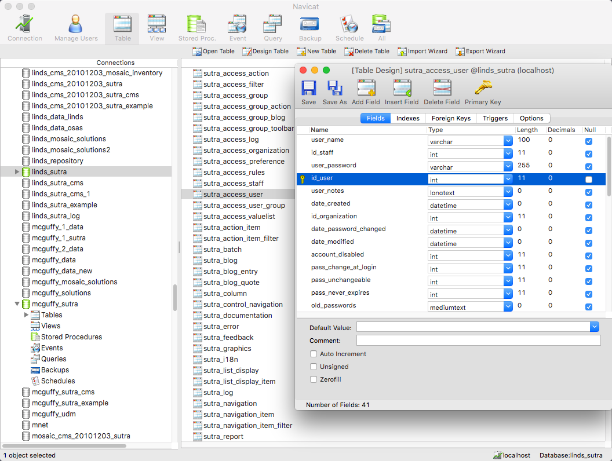
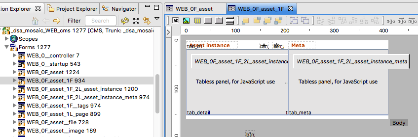
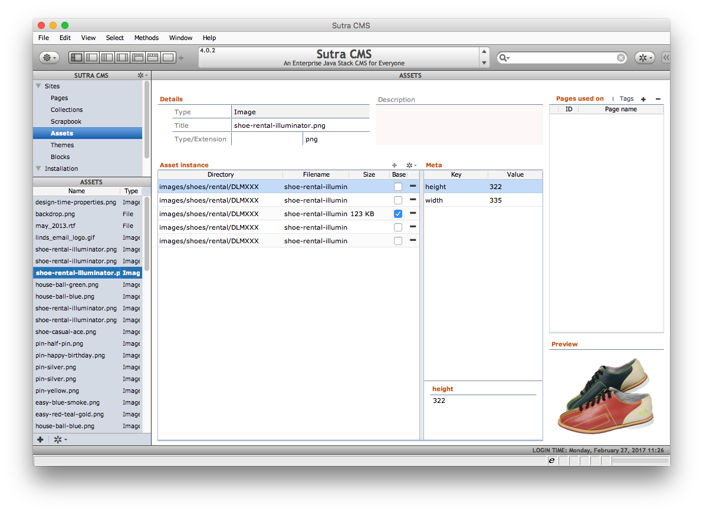
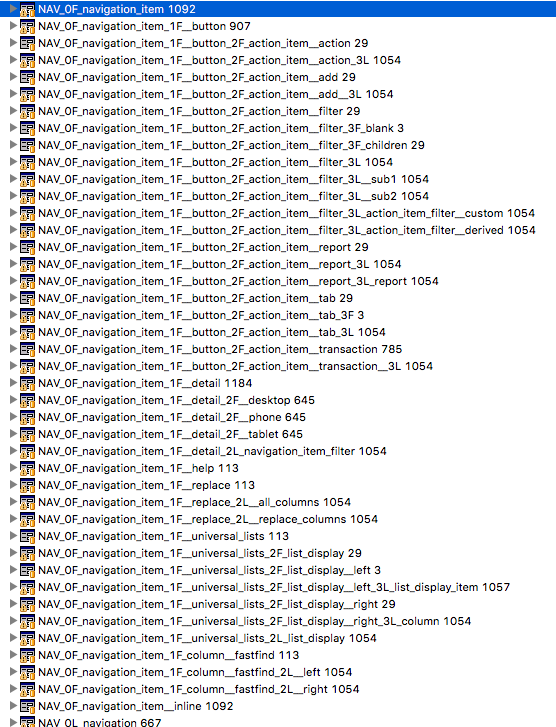
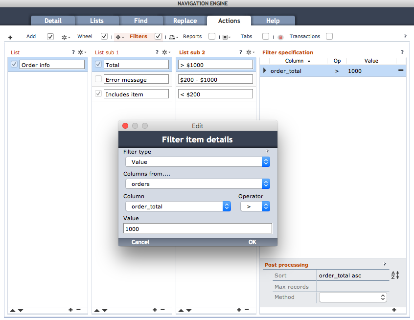
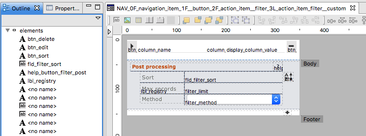
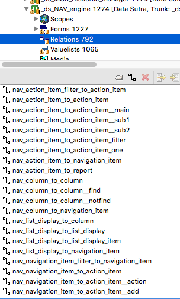
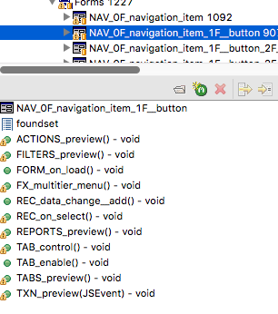

Naming Conventions
- 10 things to consider in a naming convention
- 1 Tons of Servoy objects of many different types
- 2 Names must be unique within their object scope
- 3 Be descriptive
- 4 Be consistent
- 5 Know the Servoy naming quirks
- 6 Know your SQL vendor naming restrictions
- 7 Size matters, but not to Servoy
- 8 Use what naming style is comfortable to you and your team
- 9 Employing different naming styles for different types of objects can help your frame of reference
- 10 Module and form names benefit greatly from very descriptive names that add additional layers of organization
- Data Sutra style overview
- Naming conventions by Servoy object
10 things to consider in a naming convention
1 Tons of Servoy objects of many different types
You create and name a ton of objects when developing solutions with Servoy. Your solution...modules...database connections...databases, tables and columns...forms...form objects...relations...calculations...value lists...methods...globals and form variables...and finally variables in methods.
2 Names must be unique within their object scope
Since you need to be able to find objects in the Solution Explorer
3 Be descriptive
In solutions with a number of modules and lots of objects, it's easy to get lost within the object scope. If your names are descriptive within a scope, that can really help.
4 Be consistent
Because renaming can be a big chore and confusion is always a headache.
5 Know the Servoy naming quirks
Uppercase, lowercase, camelCase, underscores -- not every style works with Servoy objects. Relations and calculations will convert your uppercase letters to lowercase, most special characters are not valid, etc. A useful quirk is that form events and properties automatically match to a method of the same name. Another Servoy quirk is how to name methods for JUnit testing. Then there is JavaDoc to learn....
6 Know your SQL vendor naming restrictions
It's not just Servoy that you have to worry about, SQL vendors may have their own unique naming restrictions. It helps then to match up your Servoy naming conventions to your SQL vendor.
7 Size matters, but not to Servoy
Servoy doesn't have any length restrictions but quite often databases do.
8 Use what naming style is comfortable to you and your team
As programmers, we have all used many different naming styles over the years. Some are more comfortable to us than others.
9 Employing different naming styles for different types of objects can help your frame of reference
Since there are so many types of objects, using different naming styles can be a useful to delineator. For example, we use underscore style for most things but use camelCase for method variable names.
10 Module and form names benefit greatly from very descriptive names that add additional layers of organization
This last consideration is consideration #3 on steroids. There are a couple of Servoy objects (specifically: modules and forms) where being VERY descriptive can go a long ways in organizing your solution and workflow. For example, our module names sandbox modules into several categories and contain a unique identifier that is used as a prefix for many of the named object in the module. And our forms are named so that "formsets" are grouped together in the Solution Explorer.
Data Sutra style overview
UPPERCASE
Code
Uppercase VARIABLES are used for specifying constant values. While not enforced, values should never be changed after initialization and are considered immutable.
Module namespacing
A short uppercase abbreviation is used in the second slot of module names to denote the namespace of a module.
With Data Sutra based solutions easily reaching 20+ modules — all of which get combined into one global namespace for an entire solution — this module identifer is key to keeping contained objects "scoped" to their module.
Scopes
Module scopes start their names with a unique string in uppercase. Resource modules usually have a dedicated scope with the same identifier as the module container the core API of that module.

lowercase
The only time this style happens is when using camelCase for variables and not needing a second "word" in the name. Sometimes you'll see a form object with just a single lowercase name but that is mistake/laziness where we forgot to add the type prefix to the form object name.
under_score
This style is used so commonly it can be practically considered our default style. If we're not using one of the other styles, we're using the under_score style.
camelCase
We use this for method variable names.
cUs3om (custom)
We use very specific and customized naming styles for two objects -- modules and forms -- to add important layers of organization.
Modules are grouped into three main functional areas (Data Sutra, addons, business); can be split further into types (head, resource); and contain a unique identifier that is used as a prefix for naming objects within the module.
Forms are named by a formula that groups all forms used in a formset together into a hierarchical "bundle". This models how we develop our screens -- some of our screen design patterns comprise of 20+ forms. Having them together in one block with the "head" form at the top saves us loads of time and frustration.
Naming conventions by Servoy object
1 Modules
- Format
category _ unique identifier _ readable name
- Examples
_ds_NAV_engine_dsa_mosaic_WEB_cms_dsa_mosaic_WEB_cms_blocksstrato_SPHERE_game_manager
Category
_dsis used for core Data Sutra modules_dsais used for Data Sutra application modulesclientIDis used for Client application modules
Unique identifier (CAPS)
This identifier is used to prefix most of a modules' objects so that they are uniquely named when combined with other modules.
There are cases where we use the same identifier for more than one module when those modules have strong coupling. Uniqueness accross these modules is usually handled with a sub prefix or just careful naming.
Readable name
Finally, it helps if a module name has a descriptive section.
2 Database connections
- Format
clientID _ descriptive name
- Examples
sutra,sutra_example,sutra_logsutra_cms,mosaic_solutionsdata_linds,strato_game_data
Data Sutra requires the first three database connections listed. All other database connections are assumed to be data buckets for various application modules.
Convention is to name these data buckets either after a client or an application.
3 Databases, tables and columns
Databases are organized per sizeable chunks of functionality and are named accordingly. Additionally, there is often a prefix to associate a database with a client.
linds_sutralinds_sutra_cmslinds_mosaic_solutions
Tables are named per logical data bucket and can have a prefix to namespace the tables. Where multiple tables are used to store a functionality grouping, one or more grouping names are used as prefixes.
sutra_access_actionsutra_access_filtersutra_access_groupsutra_access_group_action
Columns follow a similar pattern to table names. Some common grouping prefixes are date_, id_ and rec_.
Note: prefixes are never put at the end of a name. For example 'tablename_id' should be 'id_tablename', even for foreign keys

4 Forms
- Format
module prefix- REPEAT for each "depth" form is located
level-- 0 to 9 for depth, R for reusable, P for dialoguestype-- F for form, L for list, T for table- opt unique form set
identifier table name(opt on repeat if table name is the same as leve prior)- task (opt)
- END REPEAT
Forms compose together in Servoy via tab panels to create complete UI's. Even simple UI's typically have several contained forms.
This situation is increased additively as multiple forms are assigned to tab panels and multiplicatively as forms contain forms that contain even more forms that contain forms ... etc.
We call a set of forms that make up one discreet UI a form stack.
In the following screen shots you can see a form stack comprised of seven forms:

WEB_0F_asset contains WEB_0F_asset_1F in the first tab panel and forms WEB_0F_1F__tags and WEB_0F 1L_page in a second tab panel.

WEB_0F_asset_1F contains WEB_0F_asset_1F_2L_asset_instance and WEB_0F_asset_1F_2L_asset_instance_meta in tab panels in a splitter.
The result:

The naming convention for forms models the composable nature of Servoy forms while keeping them in order alphabetically in the Solution Explorer pane.
A more extreme example:


5 Form elements
Note: form elements need not be named unless they are used in scripting
- Format
- fld_ ...
- btn_ ...
- tab_ ...
- bean_ ...
- help_ ... -- special help button
- gfx_ ...
- lbl_ ...

6 Relations
- Format
MODULEPREFIX_standard_name__unique_task

7 Calculations
Same as column names.

8 Value lists
- Format
MODULEPREFIX_GROUPING_functional label

9 Methods
- Format
ACTIONTYPE_action
- Action types
- FORM, REC, FILTER, FLD, FX, TAB, etc

10 Variables
camelCasefor non-constant variablesUPPERCASEfor immutable constants
11 Global variables and form variables
Same as variable naming except with the addition of global identifier prefix for global variables and a form prefix for form variables.